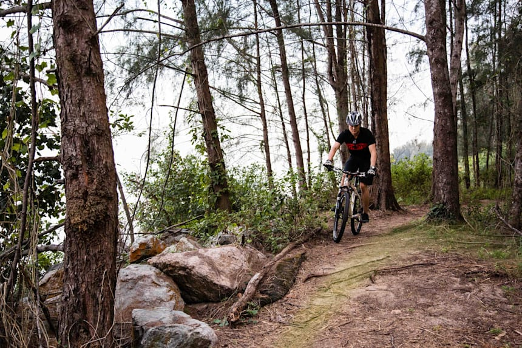
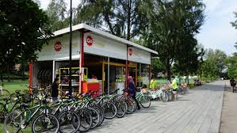

NEW DISCOVERIES AWAITS YOU
A place for the young and the young at heart

Coney Island park is a home to a wide variety of habitat such as coastal forests, grasslands, mangroves, casuarina woodlands.
From Punggol interchange, take bus 84 to Punggol Point Park/Punggol Settlement. Walk about 500m east along the Punggol Promenade Nature Walk to get to Coney Island Park West Entrance.
7am to 7pm (Gates will be closed at 7pm)
Learn about the diversity and history of the park through guided walks conducted by NParks volunteers.
With the scenic wonder of sand, sea and trees, cycle through the terrain with bicycle rental shop available at the park.
Click here to see a list of bicycle rental shop near Coney Island
1. Camping is not allowed
2. Fishing is not allowed
3. Do not feed the monkeys, or hold any plastic bag and water bottle when visiting the park.
4. Do not enter the park during inclement weather.